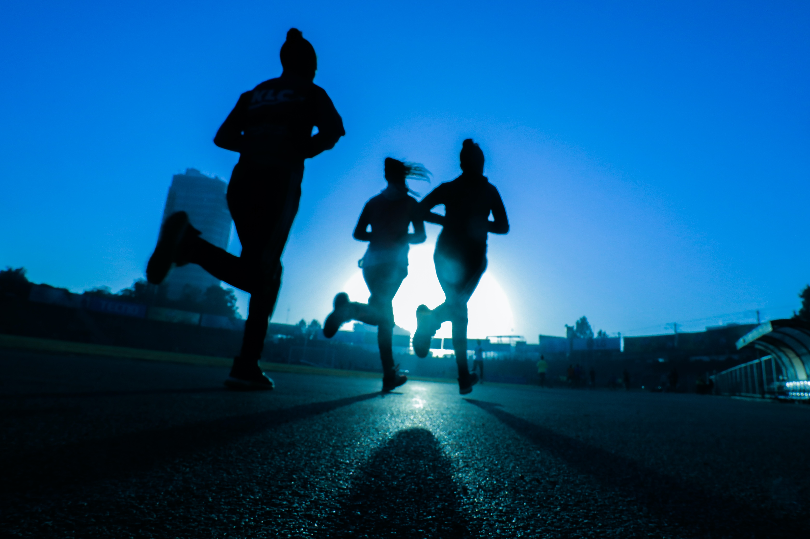

생활체육은 건강 및 체력 증진과 여가 선용을 위하여 행하는 체육 활동으로서 운동의 기회와 혜택을 균등하게 누릴 권리를 제공하는 "모든 사람을 위한 체육(Sport for All) 또는 평생 체육(Sport for Lifetime)"으로 알려져 있다.
무엇보다도 생활체육이란 생애에 걸쳐 능동적이고 지속적으로 체육이나 여가 활동에 참여함으로써 신체, 정서, 정신적으로 건강하고 활력 넘친 사회구성원으로서 생업에 충실하며 개인의 복지 구현을 위한 활동을 의미한다.

생활체육에 대한 해석은 사람마다 조금씩 다르기는 하지만 국민생활체육협의회(1997)에서는 구체적으로 삶의 질적 향상을 추구하며 사회 구성원이 각자의 업무에 종사하지 않는 여가 시간을 이용하여 각 개인의 자발적인 참가에 의해서 이루어지는 사회적 노력의 총체로서 다음과 같이 정의하고 있다.